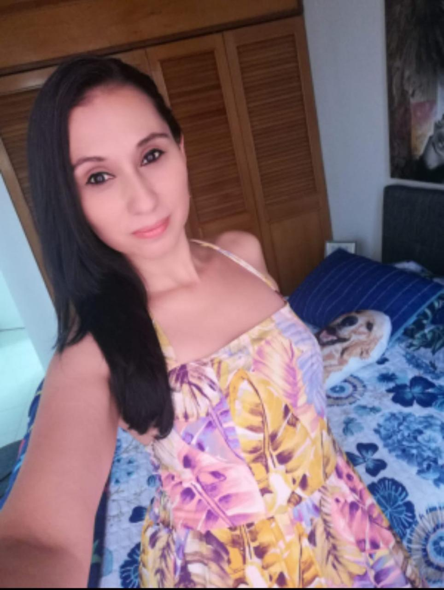
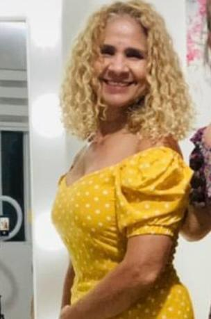
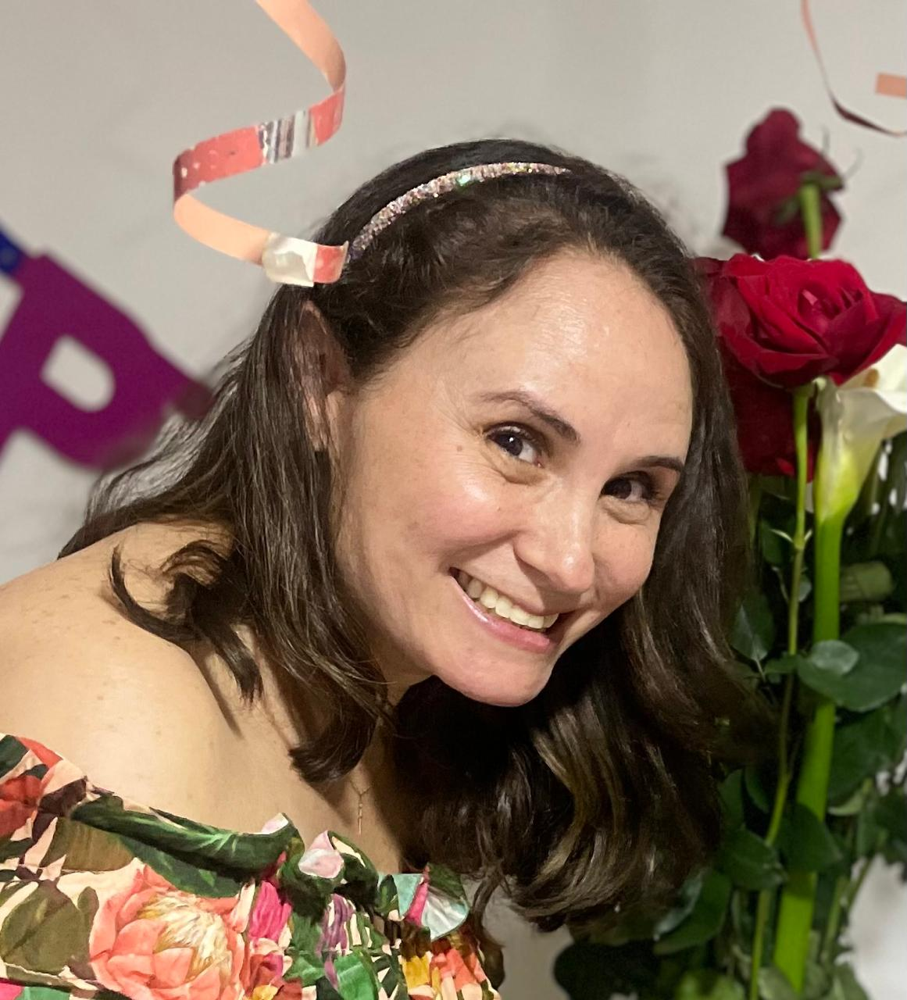
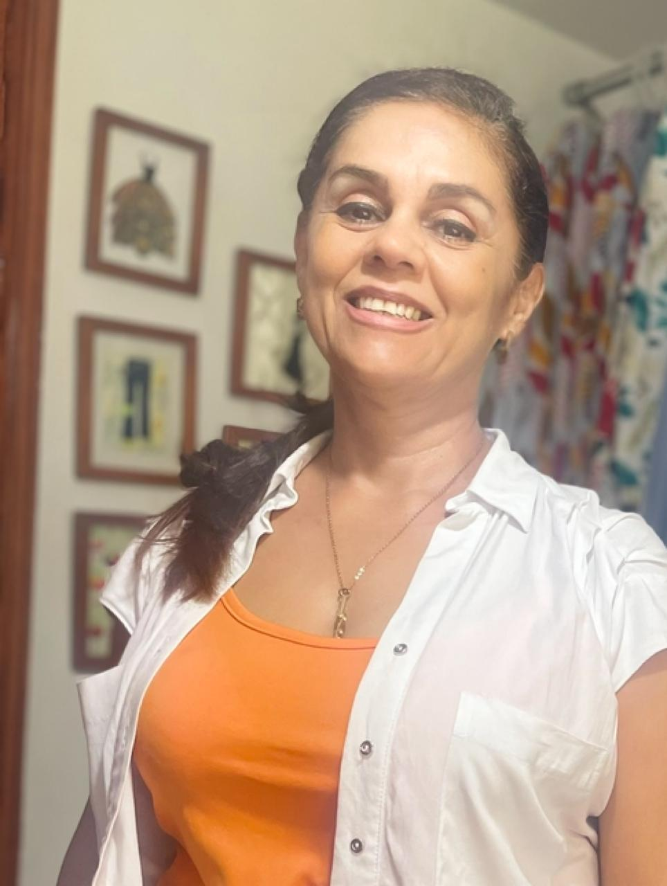

 Johanna Betancur
Amo lo vigente que está con sus tendencias. He comprado ropa con mi familia y nos encantan los diseños!
Saida Arcila
Es una marca, que ha llegado al público con gran éxito. Trabajo con ella hace un par de años, me encantan sus diseños y precios accequibles.
 Diana Dávila
LU es una marca que inspira al cambio, a la transformación y a sentir La Moda de forma
casual y totalmente cómoda mientras luces sus prendas
Cuando veo sus diseños, siento la textura de sus telas y me pruebo todos sus estilos ,
me digo ”Claramente LU piensa en nosotras para crear sus colecciones “ Qué nota!
Definitivamente Amo a LU
 María Teresa Rojas
Trabajo con el tema ambiental y valoro la calidad de sus materiales y que puedas usar las prendas por mucho tiempo sin tener que desecharlas muy pronto y asi puedes ayudar al planeta.
 Estella Villegas
Estella Villegas
Hace más de cinco años promuevo , uso y distribuyó prendas de la marca LU. La calidad de las prendas es excepcional y mis clientas siempre quedan encantadas con sus compras. Es un placer recomendar estás marca a quien busque ropa casual de alta calidad. Continúen así!
Patricia Sánchez
La ropa es preciosa, me encanta y la voy a recomendar con mis clientas de la Peluquería.
 Gabriela Herrera
Lu, prendas hechas con mucho amor, excelente confección y moda casual, felicitaciones a Luisa por su esmero y dedicación.